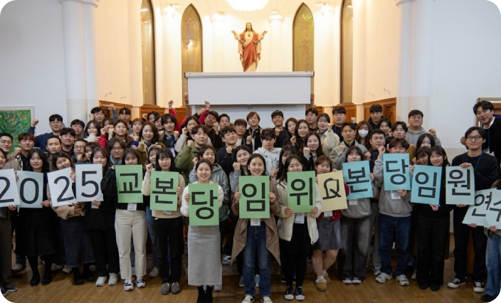
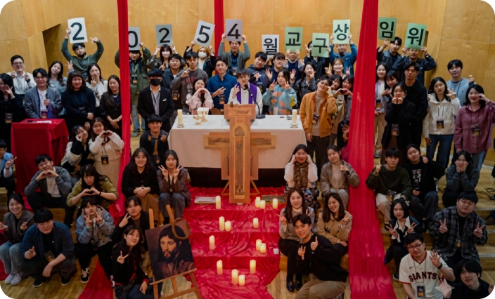
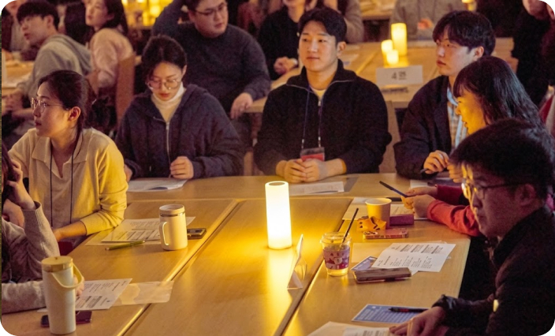
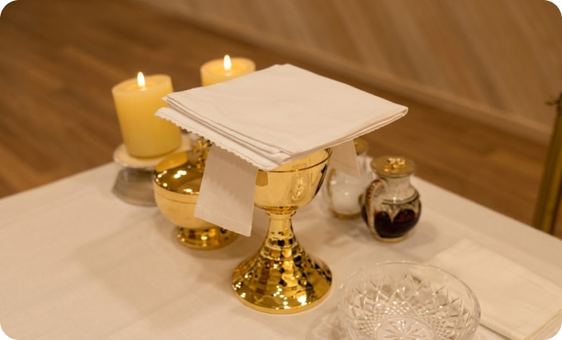
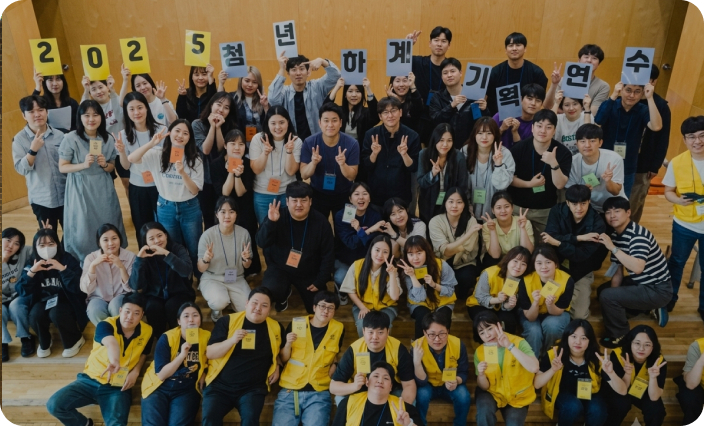
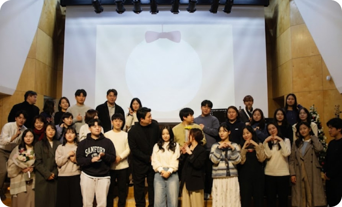
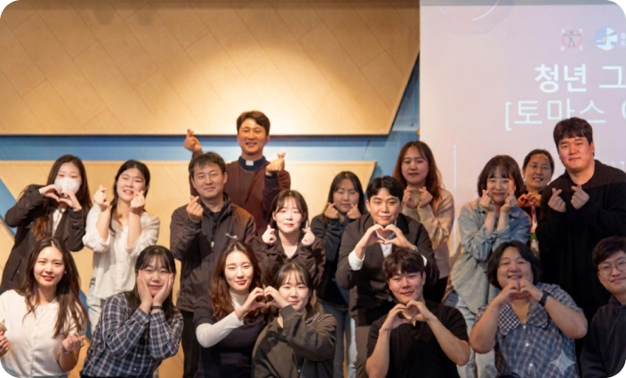
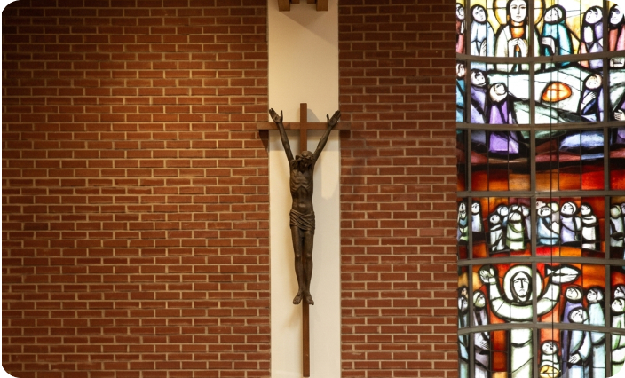

본당임원연수
본당청년연합회 회장단 그리고 각 단체 단체장들을 위한 양성 프로그램입니다. 가톨릭 청년 리더로서 새로운 한 해를 준비하는 시간을 가질 수 있는 자리입니다. 철저히 본당 청년 임원 및 청년들을 위한 여러가지 행사(떼제 기도, 청년 운동회, 성지 순례 등등)가 진행되고 있으니 많은 신청 및 참여 부탁드립니다.

교구회장단 행사
매월 1회, 19개 지구회장단들과 서울대교구 청년연합회 회장단이 모여 교구상임위를 이루고 있습니다. 교구상임위에서는 주님을 따르기 위해 친교와 나눔과 배움의 자리가 될 수 있도록 함께 만들어 나가고 있습니다.

청년 전례학교 초급
서울대교구 청소년국 청년부에서 준비한 청년전례학교 초급과정입니다. 청년전례학교 초급과정은 전례 단원으로서 전례에 대해, 미사에 대해 알고 봉사할 수 있도록 도움을 주는 기본 교육입니다. (내용: 전례와 성사, 전례력, 미사의 의미와 구조 등의 교육 및 작업)

청년 전례학교 중급
청년전례학교 중급 과정 입니다. 청년전례학교 초급과정의 기본지식을 토대로 본당에서 전례 단원으로서 봉사할 수 있도록 실습 과정이 준비되어 있습니다. 미사에 대해 알고 봉사할 수 있도록 도움을 주는 심화 교육입니다. (내용: 독서 봉독 및 발음, 제의 및 제구, 예물봉헌 실습)

청년 하계 기획연수
청년 하계기획연수는 본당 여름 캠프를 준비하는 청년들에게 여름 행사 기획에 대한 전반적인 교육 및 프로그램 시연을 통해 행사를 기획하는데에 보다 도움이 되고자 2025년 처음 신설되었습니다. 기획연수 참여자들에게 워크북을 제공하고 있으며 본당 청년들이 쉽게 찾아보고 참조할 수 있도록 청년부 홈페이지에도 여러 자료가 제공됩니다.

음악콘서트
청년들이 성가 안에서 하나될 수 있는 청년 음악콘서트가 청년부 대표 생활성가 밴드 "유빌라떼'와 함께 진행됩니다. 매년 11월~12월 사이 진행됩니다.

청년 토크콘서트
청년들의 신앙 고민 및 청년들에게 도움이 될 수 있는 신자를 초대하여 고민거리를 나누고 교회안에서 청년으로서 할 수 있는것들에 대해 나누어 보는 토크콘서트입니다.

청년 동계 기획연수
청년 동계기획연수는 본당 피정을 준비하는 청년들에게 피정 기획에 대한 전반적인 교육 및 프로그램 시연을 통해 행사를 기획하는데에 보다 도움이 되고자 2026년 처음 신설되었습니다. 기획연수 참여자들에게 워크북을 제공하고 있으며 본당 청년들이 쉽게 찾아보고 참조할 수 있도록 청년부 홈페이지에도 여러 자료가 제공됩니다.